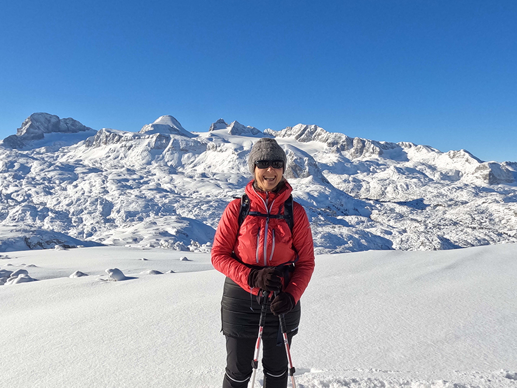
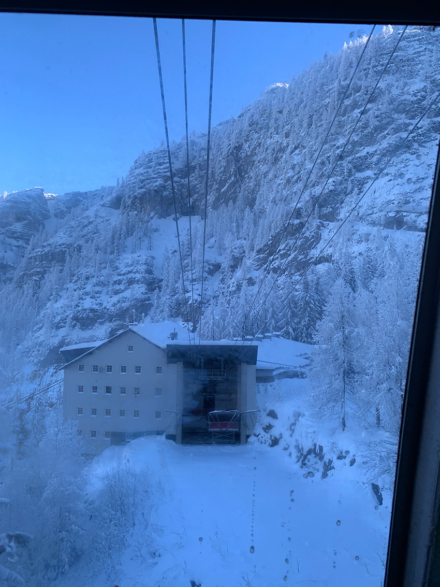
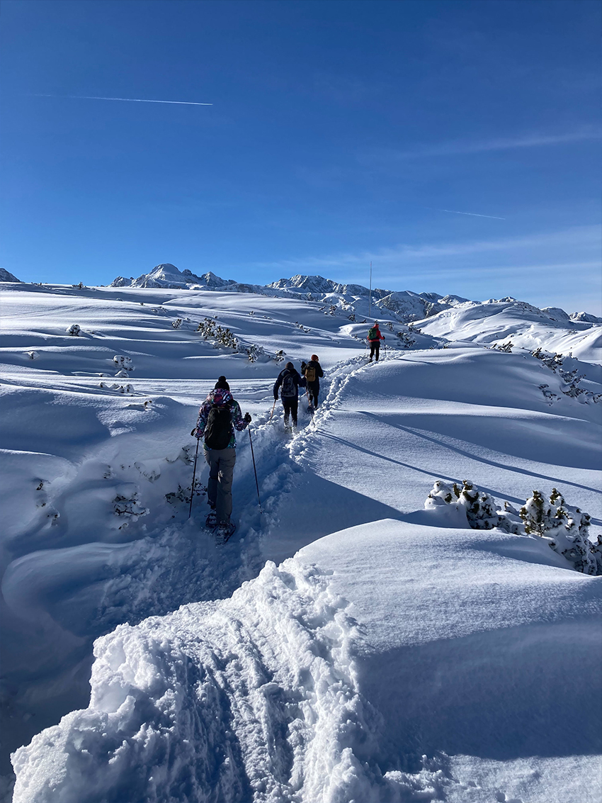
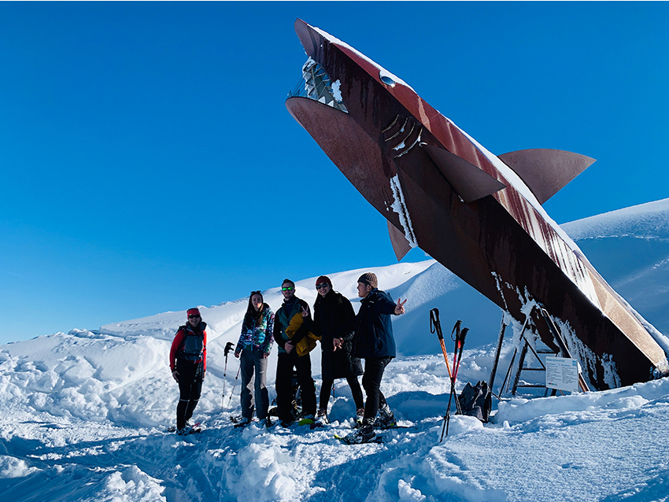
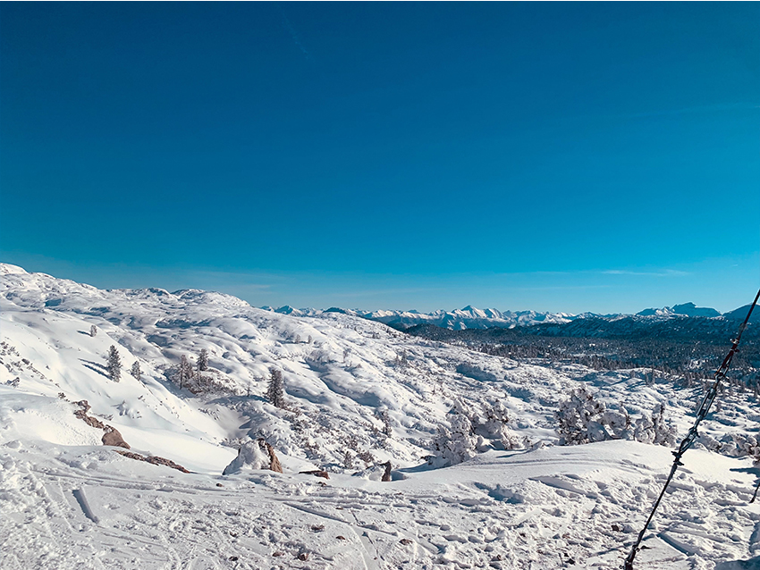
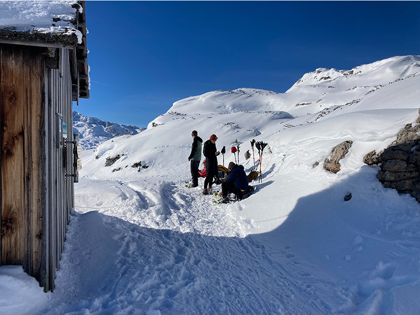
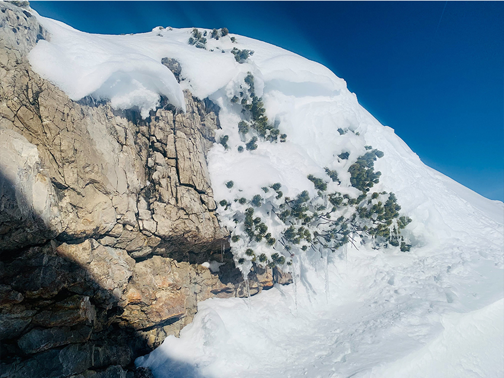
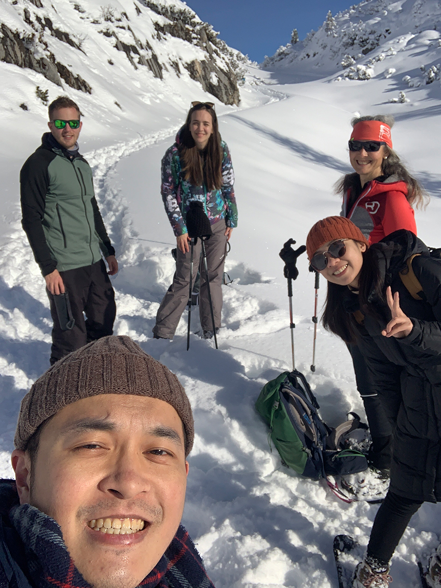
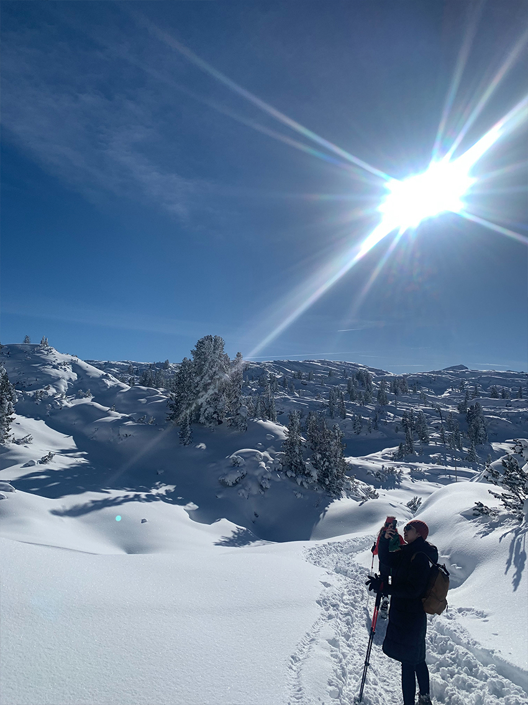
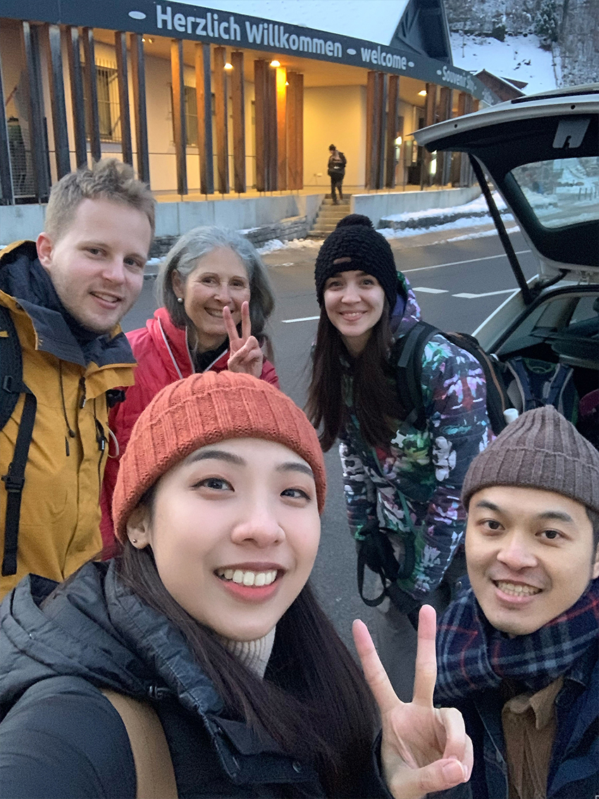

平日喜愛健行爬山，爬過的總是綠意盎然的山谷，這一次來點不一樣的，我和另一半飛到了奧地利的達赫施泰因山，海拔約為3000公尺，為東阿爾卑斯山的一部分，來場難忘的雪山登山之旅。
一開始到了纜車站，跟我們相約的山頂嚮導很有活力的開始介紹我們今日的雪山健行，包含裝備、行走方式和路線，約爬8個小時，15公里的山路。
|  |
乘坐著纜車上山，由於海拔將近三千公尺，坐了兩段的纜車，來到了爬山和滑雪的出發點。
|  |
換上如同滑雪的登山裝備，防止在雪地行走時，因為較深的積雪而滑倒或是陷進去雪堆，在雪地健走的感覺，跟以往爬山的動作差異很大，每一步都覺得像走在綿密的雪花糕裡，剛開始充滿了新鮮和美麗的步伐，走了半小時以上就變成了一種挑戰，因為積雪和雪水會漸漸地吸附在你的登山鞋上，需要時常的把雪和碎冰弄掉，以防腳步變得沉重，加上雪的低溫以及積雪的路面，對於體力和耐力更是一種挑戰。
|  |
走了一個多小時，來到了我們的第一站-達赫施泰因山鯊魚座，嚮導說由於幾千幾萬年前這裡是海洋，後來由於板塊運動，才形成了壯麗又綿延的阿爾卑斯山脈群，在山上的地質內部，發現了許多海洋生物的化石，所以用鯊魚作為一個有趣的意象。
|  |
接著繼續行走，雪地健行，時不時發現雪兔的足跡，以及山羊的腳印，冬天的雪地，白茫茫的美麗，給人一種純白的靜謐，如入白色沙漠般海市蜃樓的錯覺，夏日的植被隱藏其中，被深深的積雪掩埋著，卻又不失一片生機，嚮導也藉機說了許多有趣和在山裡需要注意的知識，冬日的雪山蘊藏的危機更是超乎我們的想像。
|  |
不知不覺我們走了三個小時，體力也到了一個臨界點，於是坐下喘口氣，在有急救物資的小木屋旁開始了我們的雪地野餐，補充好體力再上路。
|  |
正中午的雪地，在迎向陽光面的部份有些許融雪，露出來的松樹和橡樹的毬果在雪地中格外可愛，必定在未來的夏日裡重新長成綠意的大樹。
|  |
到了旅途的後半段，雖然鞋子的外圍和最上面有點滲雪，甚至有點濕冷，卻也阻止不了我們登頂環山的熱情，也順勢和嚮導及另外兩個登山友來了張雪地的合影，象徵的此次行程的大成功。
|  |
雪地美景，點綴著些許的綠意及耀眼的陽光，隨意拍都很美，如同在童話故事內，走在其中，會不自覺得敬佩大自然的偉大，和反襯人類的渺小。嚮導說由於全球暖化，再過幾十年可能雪山的雪就會沒了，我們能做的就是好好愛惜大自然，珍惜地球母親給我們的一切。
|  |
在體感負5度的傍晚，我們終於下山了，完成了費時將近8小時路程15km的雪山健行一日遊，腳最後真的濕冷和痠痛，很像是穿著5公斤的濕透的鞋子在登山的感覺，但很慶幸自己完成了在雪地裡健行這特別的挑戰，和伙伴們準備享受道地的奧地利佳餚。
|  |